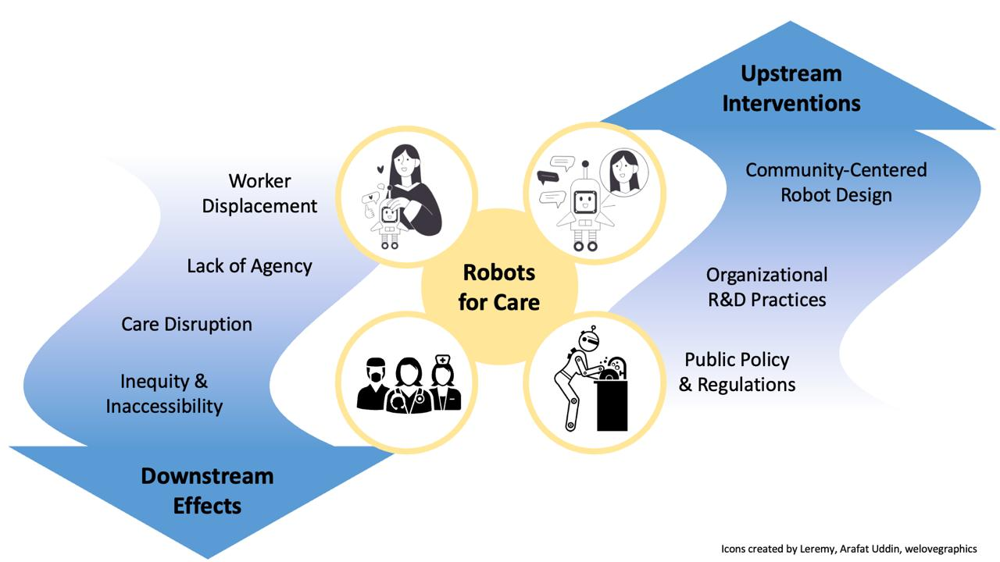

Robots for Care: Exploring Downstream Socio-Ethical Effects and Upstream Interventions
March 16, 2026. Hybrid in-person and virtual

Robots hold potential to expand accessibility to disabled communities, such as by providing physical or cognitive assistance, and enabling new ways of participating in social activities. They also can support healthcare workers with ancillary tasks and care delivery, supporting them to work at the top of their license.
However, the real-world deployment of robots across these contexts can create social, ethical, and organizational challenges (e.g., downstream effects). They may undermine the agency of disabled people, disrupt care delivery, shift roles, and displace labor.
In this workshop, we bring together multidisciplinary stakeholders to consider the downstream effects of robots used in clinical and assistive contexts. Such effects include the social, ethical, and organizational consequences that emerge after robots are deployed in real-world care settings – often beyond designers’ original intentions. Upstream interventions refer to early-stage design, research, and policy approaches that aim to anticipate and mitigate these effects before deployment.
We invite participation from those who are interested in the social, ethical, and institutional implications of robots in clinician and assistive contexts. There are multiple ways to get involved in our workshop, through either submitting a short written contribution for those inclined to do so, or simply participating in our workshop in general. The workshop will be hybrid and interactive to support accessibility. Please see our Get Involved page for more details.
Topics of interest for this workshop include, but are not limited to:
- Ethical, legal, and social implications of robots in clinical or assistive contexts
- Downstream effects of robots in healthcare (e.g., worker displacement, care disruption)
- Upstream interventions at the meso or macro level (e.g., community programs, participatory research, policies)
- Community-based research practices
- Experience reports or deployment insights from key healthcare robotics areas, including:
- Cognitively assistive robots
- Socially assistive robots
- Physically assistive robots
- Hospital deployed robots (e.g., delivery, sanitation, surgery)
- Rehabilitation robotics
- We particularly encourage submissions that surface lived experiences, or cross-disciplinary insights that may be underrepresented in traditional academic venues.
Important Dates
🗓 Submission deadline: 9th February, 2026 AoE
📣 Notification of acceptance: 16th February, 2026
📸 Camera-ready deadline: 26th February, 2026
🤖 Workshop date: 16th March, 2026, Morning (GMT)
🙌 Workshop format: Hybrid and interactive